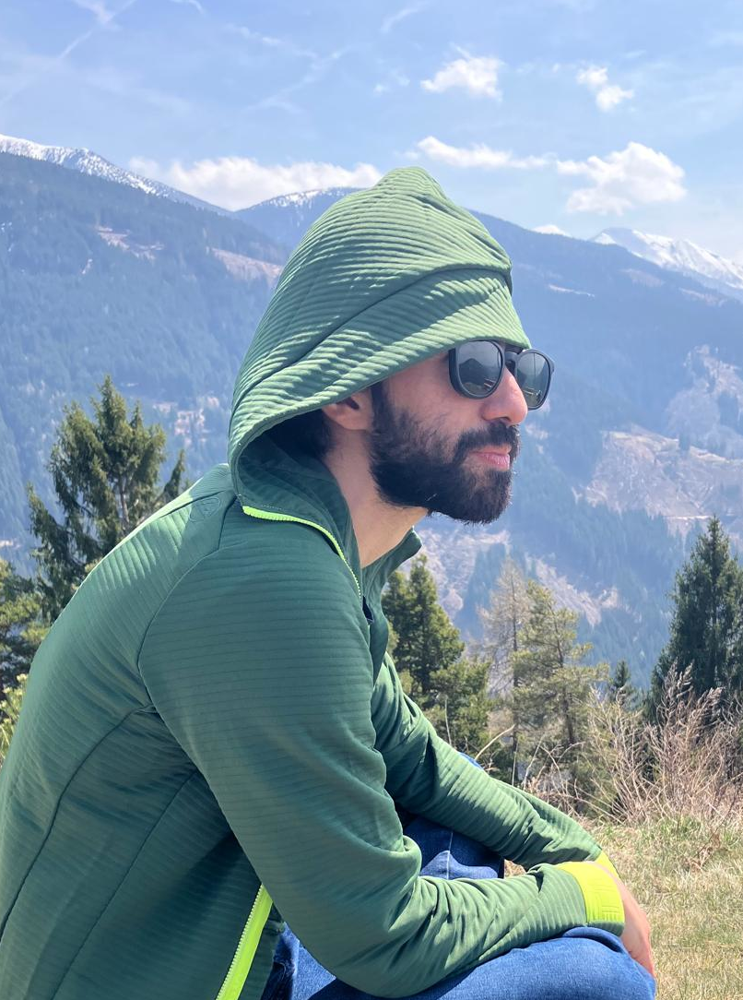

PhD Student · 3D Vision & Language
Hi, I'm Ashkan 👋
I'm a PhD student at the University of Trento and Fondazione Bruno Kessler (FBK), advised by Fabio Remondino in the 3DOM research unit. My work focuses on open-vocabulary point cloud segmentation, especially on photogrammetric data.
I'm fascinated by bringing 2D vision-language models into the 3D world — making 3D understanding flexible and scalable through training-free segmentation, zero-shot learning, and models that just get it. I love the idea of machines that instantly make sense of a 3D scene.
I earned my MS in Computer Science at the University of Trento. Outside research, you'll find me climbing, hiking, and in the mountains. 🏔️

Publications
- Loading publications…